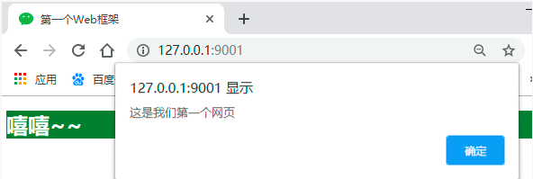
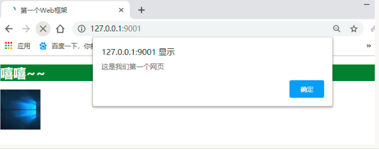

我们可以这样理解：所有的Web应用本质上就是一个socket服务端，而用户的浏览器就是一个socket客户端，基于请求做出响应，客户都先请求，服务端做出对应的响应，按照http协议的请求协议发送请求，服务端按照http协议的响应协议来响应请求，这样的网络通信，我们就可以自己实现Web框架了。
通过对socket的学习，我们知道网络通信，我们完全可以自己写了，因为socket就是做网络通信用的，下面我们就基于socket来自己实现一个web框架，写一个web服务端，让浏览器来请求，并通过自己的服务端把页面返回给浏览器，浏览器渲染出我们想要的效果。
html文件内容如下，名称为test.html：
<!DOCTYPE html>
<html lang="en">
<head>
<meta charset="UTF-8">
<title>Title</title>
<link rel="icon" href="wechat.ico">
<!--直接写在html页面里面的css样式是直接可以在浏览器上显示的-->
<style>
h1{
background-color: green;
color: white;
}
</style>
</head>
<body>
<h1>姑娘，你好，我是Jaden，请问约吗？嘻嘻~~</h1>
<!--直接写在html页面里面的img标签的src属性值如果是别人网站的地址（网络地址）是直接可以在浏览器上显示的-->
<!--<img src="https://timgsa.baidu.com/timg?image&quality=80&size=b9999_10000&sec=1550395461724&di=c2b971db12eef5d85aba410d1e2e8568&imgtype=0&src=http%3A%2F%2Fy0.ifengimg.com%2Fifengimcp%2Fpic%2F20140822%2Fd69e0188b714ee789e97_size87_w800_h1227.jpg" alt="">--> <!--如果都是网络地址，那么只要你的电脑有网，就可以看到，不需要自己在后端写对应的读取文件，返回图片文件信息的代码，因为别人的网站就做了这个事情了-->
<img src="meinv.png" alt="" width="100" height="100"> <!--如果你是本地的图片想要返回给页面，你需要对页面上的关于这个图片的请求要自己做出响应，这个src就是来你本地请求这个图片，你只要将图片信息读取出来，返回给页面，页面拿到这个图片的数据，就能够渲染出来了，是不是很简单-->
<!--直接写在html页面里面的js操作是直接可以在浏览器上显示的-->
<script>
alert('这是我们第一个网页')
</script>
<script src="test.js"></script>
</body>
</html>
<!--再准备一个图片，名称为meinv.jpg，再准备一个ico文件，名称为wechat.ico，其实就是个图片文件，微信官网打开之后，在浏览器最上面能够看到-->然后开始写我们的web框架，我们分这么几步来写：
一、简单的web框架
创建一个python文件，内容如下，名称为test.py：
import socket
sk = socket.socket()
sk.bind(('127.0.0.1',8001))
sk.listen()
conn,addr = sk.accept()
from_b_msg = conn.recv(1024)
str_msg = from_b_msg.decode('utf-8')
#socket是应用层和传输层之间的抽象层，每次都有协议，协议就是消息格式，那么传输层的消息格式我们不用管，因为socket帮我们搞定了，但是应用层的协议还是需要咱们自己遵守的，所以再给浏览器发送消息的时候，如果没有按照应用层的消息格式来写，那么你返回给浏览器的信息，浏览器是没法识别的。而应用层的协议就是我们的HTTP协议，所以我们按照HTTP协议规定的消息格式来给浏览器返回消息就没有问题了，关于HTTP我们会细说，首先看一下直接写conn.send(b'hello')的效果，然后运行代码，通过浏览器来访问一下，然后再看这一句conn.send(b'HTTP/1.1 200 ok \r\n\r\nhello')的效果
#下面这句就是按照http协议来写的
# conn.send(b'HTTP/1.1 200 ok \r\n\r\nhello')
#上面这句还可以分成下面两句来写
conn.send(b'HTTP/1.1 200 ok \r\n\r\n')
with open('test.html','rb') as f:
f_data = f.read()
conn.send(f_data)
页面上输入网址看效果，css和js代码的效果也有，very good
但是我们知道，我们的css和js基本都是写在本地的文件里面的啊，而且我们的图片基本也是我们自己本地的啊，怎么办，我们将上面我们提前准备好的js和css还有那个.ico结尾的图片文件都准备好，来我们在来一个升级版的web框架，其实css、js、图片等文件都叫做网站的静态文件。
首先我们先看一个效果，如果我们直接将我们写好的css和js还有.ico和图片文件插入到我们的html页面里面，就是下面这个html文件
<!DOCTYPE html>
<html lang="en">
<head>
<meta charset="UTF-8">
<title>Title</title>
<link rel="stylesheet" href="test.css">
<link rel="icon" href="wechat.ico">
</head>
<body>
<h1>姑娘，你好，我是Jaden，请问约吗？嘻嘻~~</h1>
<img src="meinv.png" alt="" width="100" height="100">
<script src="test.js"></script>
</body>
</html>
<!--css文件内容如下，名称为test.css： -->
h1{
background-color: green;
color: white;
}
<!-- js文件内容如下，名称为test.js：-->
alert('这是我们第一个网页');二、返回静态文件的高级web框架
import socket
sk = socket.socket()
sk.bind(('127.0.0.1',8001))
sk.listen()
#首先浏览器相当于给我们发送了多个请求，一个是请求我们的html文件，而我们的html文件里面的引入文件的标签又给我们这个网站发送了请求静态文件的请求，所以我们要将建立连接的过程循环起来，才能接受多个请求，没毛病
while 1:
conn,addr = sk.accept()
# while 1:
from_b_msg = conn.recv(1024)
str_msg = from_b_msg.decode('utf-8')
#通过http协议我们知道，浏览器请求的时候，有一个请求内容的路径，通过对请求信息的分析，这个路径我们在请求的所有请求信息中可以提炼出来，下面的path就是我们提炼出来的路径
path = str_msg.split('\r\n')[0].split(' ')[1]
print('path>>>',path)
conn.send(b'HTTP/1.1 200 ok \r\n\r\n')
#由于整个页面需要html、css、js、图片等一系列的文件，所以我们都需要给人家浏览器发送过去，浏览器才能有这些文件，才能很好的渲染你的页面
#根据不同的路径来返回响应的内容
if path == '/': #返回html文件
print(from_b_msg)
with open('test.html','rb') as f:
# with open('Python开发.html','rb') as f:
data = f.read()
conn.send(data)
conn.close()
elif path == '/meinv.png': #返回图片
with open('meinv.png','rb') as f:
pic_data = f.read()
# conn.send(b'HTTP/1.1 200 ok \r\n\r\n')
conn.send(pic_data)
conn.close()
elif path == '/test.css': #返回css文件
with open('test.css','rb') as f:
css_data = f.read()
conn.send(css_data)
conn.close()
elif path == '/wechat.ico':#返回页面的ico图标
with open('wechat.ico','rb') as f:
ico_data = f.read()
conn.send(ico_data)
conn.close()
elif path == '/test.js': #返回js文件
with open('test.js','rb') as f:
js_data = f.read()
conn.send(js_data)
conn.close()
#注意：上面每一个请求处理完之后，都有一个conn.close()是因为，HTTP协议是短链接的，一次请求对应一次响应，这个请求就结束了，所以我们需要写上close，不然浏览器自己断了，你自己写的服务端没有断，就会出问题。
运行起来我们的py文件，然后在浏览器访问一下我们的服务端，看效果
完全搞定了，自己通过socket已经完全搞定了web项目，激动不，哈哈，我们再来完善一下
三、更高级版(函数+多线程版+动态获取时间戳)web框架
# -*- coding: utf-8 -*-
# @Time : 2019/7/12 17:11
# @Author : AnWen
import time
import socket
from threading import Thread
server = socket.socket()
server.bind(('127.0.0.1', 9000))
server.listen()
def html(conn):
time_msg=str(time.time())
with open('test.html', 'r',encoding='utf-8') as f:
date = f.read()
# 在网页中定义好特殊符号，用动态的数据去替换提前定义好的特殊符号
date=date.replace('%这是被替换字符串%',time_msg)
date=date.encode('utf-8')
conn.send(date)
conn.close()
def css(conn):
with open('test.css', 'rb') as f:
date = f.read()
conn.send(date)
conn.close()
def js(conn):
with open('test.js', 'rb') as f:
date = f.read()
conn.send(date)
conn.close()
def ico(conn):
with open('wechat.ico', 'rb') as f:
date = f.read()
conn.send(date)
conn.close()
def jpg(conn):
with open('window.jpg', 'rb') as f:
date = f.read()
conn.send(date)
conn.close()
#定义一个路径和执行函数的对应关系，不再写一堆的if判断了
urlpatterns = [
('/', html),
('/test.css', css),
('/test.js', js),
('/wechat.ico', ico),
('/window.jpg', jpg)
]
while True:
conn, addr = server.accept()
request_str = conn.recv(1024).decode('utf-8')
path = request_str.split('\r\n')[0].split(' ')[1]
print(path)
# 因为要遵循HTTP协议，所以回复的消息也要加状态行
conn.send(b'HTTP/1.1 200 ok\r\n\r\n')
#遍历路径和函数的对应关系列表，并开多线程高效的去执行路径对应的函数，
for item in urlpatterns:
if path==item[0]:
t=Thread(target=item[1],args=(conn,))
t.start()四、wsgiref模块版web框架
wsgiref模块其实就是将整个请求信息给封装了起来，就不需要你自己处理了，假如它将所有请求信息封装成了一个叫做request的对象，那么你直接request.path就能获取到用户这次请求的路径，request.method就能获取到本次用户请求的请求方式(get还是post)等，那这个模块用起来，我们再写web框架是不是就简单了好多啊。
对于真实开发中的python web程序来说，一般会分为两部分：服务器程序和应用程序。
服务器程序负责对socket服务器进行封装，并在请求到来时，对请求的各种数据进行整理。
应用程序则负责具体的逻辑处理。为了方便应用程序的开发，就出现了众多的Web框架，例如：Django、Flask、web.py 等。不同的框架有不同的开发方式，但是无论如何，开发出的应用程序都要和服务器程序配合，才能为用户提供服务。
这样，服务器程序就需要为不同的框架提供不同的支持。这样混乱的局面无论对于服务器还是框架，都是不好的。对服务器来说，需要支持各种不同框架，对框架来说，只有支持它的服务器才能被开发出的应用使用。最简单的Web应用就是先把HTML用文件保存好，用一个现成的HTTP服务器软件，接收用户请求，从文件中读取HTML，返回。如果要动态生成HTML，就需要把上述步骤自己来实现。不过，接受HTTP请求、解析HTTP请求、发送HTTP响应都是苦力活，如果我们自己来写这些底层代码，还没开始写动态HTML呢，就得花个把月去读HTTP规范。
正确的做法是底层代码由专门的服务器软件实现，我们用Python专注于生成HTML文档。因为我们不希望接触到TCP连接、HTTP原始请求和响应格式，所以，需要一个统一的接口协议来实现这样的服务器软件，让我们专心用Python编写Web业务。
这时候，标准化就变得尤为重要。我们可以设立一个标准，只要服务器程序支持这个标准，框架也支持这个标准，那么他们就可以配合使用。一旦标准确定，双方各自实现。这样，服务器可以支持更多支持标准的框架，框架也可以使用更多支持标准的服务器。
WSGI（Web Server Gateway Interface）就是一种规范，它定义了使用Python编写的web应用程序与web服务器程序之间的接口格式，实现web应用程序与web服务器程序间的解耦。
常用的WSGI服务器有uwsgi、Gunicorn。而Python标准库提供的独立WSGI服务器叫wsgiref，Django开发环境用的就是这个模块来做服务器。
好，接下来我们就看一下（能理解就行，了解就可以了）：先看看wsfiref怎么使用：
from wsgiref.simple_server import make_server
# wsgiref本身就是个web框架，提供了一些固定的功能（请求和响应信息的封装，不需要我们自己写原生的socket了也不需要咱们自己来完成请求信息的提取了，提取起来很方便）
#函数名字随便起
def application(environ, start_response):
'''
:param environ: 是全部加工好的请求信息，加工成了一个字典，通过字典取值的方式就能拿到很多你想要拿到的信息
:param start_response: 帮你封装响应信息的（响应行和响应头），注意下面的参数
:return:
'''
start_response('200 OK', [('Content-Type', 'text/html'),('k1','v1')])
print(environ)
print(environ['PATH_INFO']) #输入地址127.0.0.1:8080，这个打印的是'/',输入的是127.0.0.1:8080/index，打印结果是'/index'
return [b'<h1>Hello, web!</h1>']
#和咱们学的socketserver那个模块很像啊
httpd = make_server('127.0.0.1', 8080, application)
print('Serving HTTP on port 8080...')
# 开始监听HTTP请求:
httpd.serve_forever()来一个完整的web项目，我们需要连接数据库了，所以先到mysql数据库里面准备一些表和数据
# -*- coding: utf-8 -*-
# @Time : 2019/7/12 18:33
# @Author : AnWen
import pymysql
conn = pymysql.connect(
host='127.0.0.1',
port=3306,
user='root',
password='123456',
database='day53',
charset='utf8',
)
cursor = conn.cursor(pymysql.cursors.DictCursor)
#创建表
sql = "create table userinfo(id int primary key auto_increment,name char(12),age int not null);"
cursor.execute(sql)
conn.commit()
cursor.close()
conn.close()
import pymysql
conn = pymysql.connect(
host='127.0.0.1',
port=3306,
user='root',
password='123456',
database='day53',
charset='utf8',
)
cursor = conn.cursor(pymysql.cursors.DictCursor)
#插入数据
sql = "insert into userinfo(name,age) values ('anwen',20);"
cursor.execute(sql)
conn.commit()
cursor.close()
conn.close()# -*- coding: utf-8 -*-
# @Time : 2019/7/12 18:55
# @Author : AnWen
import pymysql
def showdata():
conn = pymysql.connect(
host='127.0.0.1',
port=3306,
user='root',
password='123456',
database='day53',
charset='utf8',
)
cursor = conn.cursor(pymysql.cursors.DictCursor)
#查询数据
sql = 'select * from userinfo'
cursor.execute(sql)
data=cursor.fetchone()
conn.close()
conn.cursor()
return data
# showdata()
wsgiref模块版web框架
# -*- coding: utf-8 -*-
# @Time : 2019/7/12 12:17
# @Author : AnWen
import time
from wsgiref.simple_server import make_server
from showdata import showdata
def html():
#获取数据库数据
userinfo_data=showdata()
# {'id': 1, 'name': 'anwen', 'age': 20}
with open('test.html', 'r', encoding='utf-8') as f:
date = f.read()
date = date.replace('%这是被替换字符串%', userinfo_data['name'])
date = date.encode('utf-8')
return date
def css():
with open('test.css', 'rb') as f:
date = f.read()
return date
def js():
with open('test.js', 'rb') as f:
date = f.read()
return date
def ico():
with open('wechat.ico', 'rb') as f:
date = f.read()
return date
def jpg():
with open('window.jpg', 'rb') as f:
date = f.read()
return date
urlpatterns = [
('/', html),
('/test.css', css),
('/test.js', js),
('/wechat.ico', ico),
('/window.jpg', jpg)
]
def application(environ, start_response):
'''
:param environ: 是全部加工好的请求信息，加工成了一个字典，通过字典取值的方式就能拿到很多你想要拿到的信息
:param start_response: 帮你封装响应信息的（响应行和响应头），注意下面的参数
:return:
'''
# print(environ)
start_response('200 ok', [('k1', 'v1')])
path = environ['PATH_INFO']
for item in urlpatterns:
if path == item[0]:
ret = item[1]()
break
else:
ret = '404 not found!'
return [ret]
httpd = make_server('127.0.0.1', 9000, application)
print('Serving HTTP on port 9000...')
# 开始监听HTTP请求:
httpd.serve_forever()
# wsgiref本身就是个web框架，提供了一些固定的功能（请求和响应信息的封装，不需要我们自己写原生的socket了也不需要咱们自己来完成请求信息的提取了，提取起来很方便）
上面的代码实现了一个简单的动态页面(字符串替换)，我完全可以从数据库中查询数据，然后去替换我html中的对应内容（专业名词叫做模板渲染，你先渲染一下，再给浏览器进行渲染），然后再发送给浏览器完成渲染。 这个过程就相当于HTML模板渲染数据。 本质上就是HTML内容中利用一些特殊的符号来替换要展示的数据。 我这里用的特殊符号是我定义的，其实模板渲染有个现成的工具： jinja2
下载：pip install jinja2
<!DOCTYPE html>
<html lang="en">
<head>
<meta charset="UTF-8">
<title>第一个Web框架</title>
<link rel="stylesheet" href="test.css">
<link rel="icon" href="wechat.ico">
</head>
<body>
<h1>%这是被替换字符串%</h1>
<h1>{{userinfo}}</h1>
<!--<ul>-->
<!-- {% for k,v in userinfo.items() %}-->
<!-- <li>{{k}}--{{v}}</li>-->
<!-- {% endfor %}-->
<!--</ul>-->
<ul>
{% for k,v in userinfo.items() %}
<li>{{v}}</li>
{% endfor %}
</ul>
<h1>嘻嘻~~</h1>
<img src="window.jpg" alt="" width="100px" height="100px">
<script src="test.js"></script>
</body>
</html>
# -*- coding: utf-8 -*-
# @Time : 2019/7/12 12:17
# @Author : AnWen
import time
from wsgiref.simple_server import make_server
from showdata import showdata
from jinja2 import Template
def html():
userinfo_data=showdata()
with open('6jinja2和wsgiref动态框架.html', 'r', encoding='utf-8') as f:
date = f.read()
# print(date)
tem=Template(date) ## 生成模板文件
print(userinfo_data) #{'id': 1, 'name': 'anwen', 'age': 20}
date=tem.render({'userinfo':userinfo_data})
#模板的原理就是字符串替换，我们只要在HTML页面中遵循jinja2的语法规则写上，其内部就会按照指定的语法进行相应的替换，从而达到动态的返回内容。
date = date.encode('utf-8')
return date
def css():
with open('test.css', 'rb') as f:
date = f.read()
return date
def js():
with open('test.js', 'rb') as f:
date = f.read()
return date
def ico():
with open('wechat.ico', 'rb') as f:
date = f.read()
return date
def jpg():
with open('window.jpg', 'rb') as f:
date = f.read()
return date
urlpatterns = [
('/', html),
('/test.css', css),
('/test.js', js),
('/wechat.ico', ico),
('/window.jpg', jpg)
]
def application(environ, start_response):
'''
:param environ: 是全部加工好的请求信息，加工成了一个字典，通过字典取值的方式就能拿到很多你想要拿到的信息
:param start_response: 帮你封装响应信息的（响应行和响应头），注意下面的参数
:return:
'''
# print(environ)
## 设置HTTP响应的状态码和头信息
start_response('200 ok', [('k1', 'v1')])
path = environ['PATH_INFO']
for item in urlpatterns:
if path == item[0]:
ret = item[1]()
break
else:
ret = '404 not found!'
return [ret]
httpd = make_server('127.0.0.1', 9000, application)
print('Serving HTTP on port 9000...')
httpd.serve_forever()